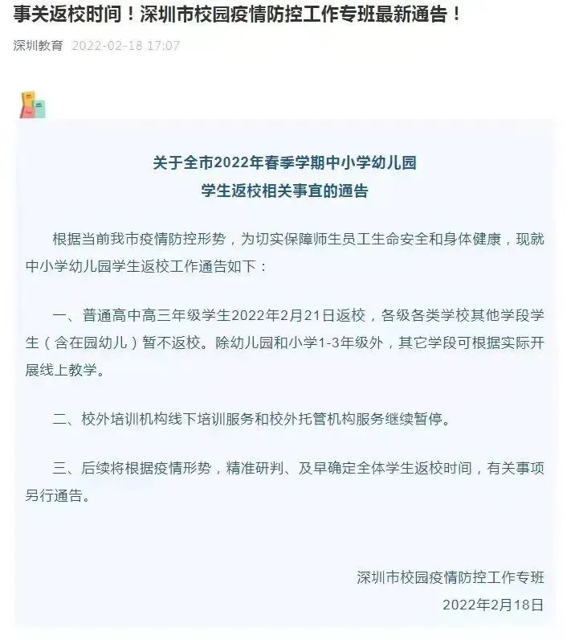
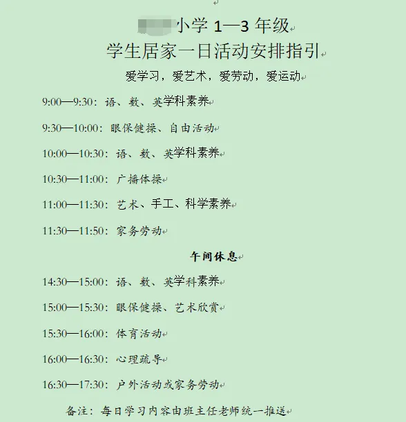
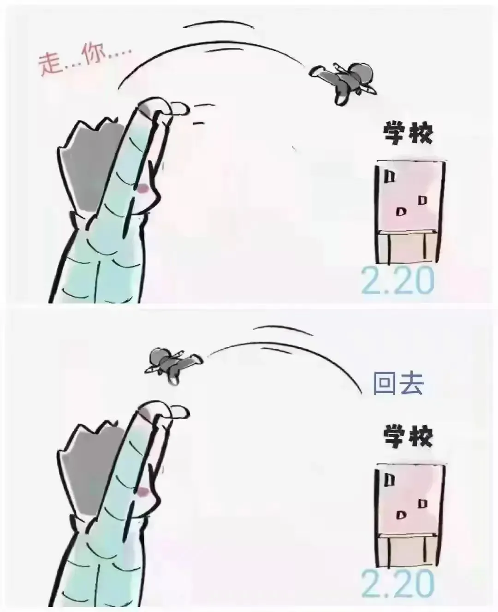

孖仔帮
公众号ID：twinsbang
关注
文|圆圈妈妈
网图|侵删
#先插播一则群通知#：第18期双胞胎跳蚤市场群已开放，公众号输入“赶集18”，扫码即可入群。
2022年2月22日星期二，在这个拥有多个“2”的日子，被全网称为两千年来最有爱的日子，我们小区被管控了。
受新冠疫情影响，小区所有人都被要求居家隔离，只进不出，三天三检。
第一次离疫情这么近，感觉挺慌的。
香港新冠疫情开始滚雪球蔓延时，我就有预感深圳被新冠沦陷是时间问题，当这一天真的到来时，心里五味杂陈。
大家的日常生活节奏完全被打乱了，市场的肉菜早已被一抢而空，线上生鲜超市也无法配送，现在看到的最多群消息就是“什么时候开始做核酸？”“现在人多不多？”“黄码了怎么办？”…
庆幸在管控前，爸爸的百日我能赶回老家祭拜，又得爸爸的保佑，我赶在粤康码变黄，片区封控前回到深圳家。
隔离管控，我是无所谓了，反正宅惯了，十天半个月不出门都不是事，要是确诊了，我也不怕，大不了被拖走，特别令我瑟瑟发抖的是，可能要辅导两个读一年级的男小孩上网课。
10天前就接到通知，深圳中小学原定2月14日开学返校，因为疫情原因改为2月21日，好不容易煎熬了一周又被通知继续延迟，紧接着几乎整个片区一夜间都被封控管控了，开学日遥遥无期。

虽然学校规定了1-3年级不上网课，但老师还是很敬业地在班级群布置了一大堆线上课程，语数英少不了，德智体美劳也来凑热闹，家长群瞬间一片哀嚎，欲哭无泪。

本来今年的寒假40多天，已经是超长了，现在又要打卡线上课，作为两个双胞胎男孩的妈，真的要疯了。
一想到未来的14天，还要继续面对家中那两只泼猴，互相伤害，互相折磨...
如果有的选，有那么一瞬间，我真的宁愿被拖走。
在此先打个预防针，若是此号长期不更文，只有两种可能，要么是圆圈妈妈被拖去隔离了，要么是被网课逼到芭比Q了。
疫情下，在深圳养活一对双胞胎太难了，在过去的两周，防寒，防疫，防偷渡，防上网，防孩子在家作妖。
我无时无刻不在祈祷着，我家的两个神兽，什么时候可以归笼啊？

今天是隔离的第三天，我已经在内心呐喊了无数遍SOS。
圆圈爸居家办公，搅屎棍般地存在，一大早就钻进电脑里敲代码找BUG，浑然不知我们娘仨这边相爱相杀正如火如荼地进行着，只有到饭点了才会冒出一句：哎呀，我饿了。
若不是念在他忙着赶项目，我真想赏赐他一个红太狼平底锅。
猪队友不给力，两位小主也不让人省心：混乱的作息，永远打不完的架，还有完全失控的线上课。
背古诗时，圆圈说要给我科普奥特曼；
做口算时，圆圈说要画一个怪兽原始形态送给我；
说自然拼读，圆圈在研究奥特曼的必杀技；
唯有看视频，玩趣味小游戏时，他们哥俩才会元神归位，笑嘻嘻地盯着IPAD看...
原以为会消停一下，但两人为了占个C位看视频一言不合又开打了，俄乌战争姑且还有导火线，两人的恶战简直毫无逻辑可言。好的时候，互相通水抄作业；不好的时候，互相打小报告，说不过了就扭打成一团。
神啊，如果我有罪，请让法律制裁我，而不是派这两只神兽上网课老干架来折磨我。
18年至今，全职在家带娃，完全没有自己的空间，疫情这三年更严重，一个人在家带两个男小孩，常常搞得又气又累，还没油腻就衰老。
圆圈兄弟读小学后，我的个人时间更少了，关于教养方面的心得也很少写，也是因为现在遇到了很多教养问题，被深深打击到了，好像当年做新手妈妈一样无助挫败，觉得自己都管不好双胞胎，哪里有资格去分享教养心得。
说到管控期间的网课，我真想躺平了，反正不用考勤不用签到，老师也不强制，那么就怎么舒服怎么来吧。
但是，深圳竞争这么大，你不鸡娃，别人一定鸡。以前只知道海淀魔都妈妈是鸡娃界的天花板，没想到忙着成为富一代的深圳妈妈鸡起娃来也毫不逊色。
她们不仅有帝都妈妈挥斥江山的气势和魔都妈妈精打细算的风范，还有鸡自己的雄心壮志和鸡娃的经韬纬略。
圆圈班级群内就有这么一群打鸡血的家长，每天都在晒自家孩子的学习打卡视频，还分享做题思路，答题技巧，与老师讨论教娃心得...那写得工工整整的字贴，全满分的口算，背古诗读英语的朗朗书声.....深深地羞辱着我。
我想到圆圈兄弟，20以内的加减法还得挠头掰手指算老半天，运算符号老是搞混，字写得东倒西歪，今天背的古诗明天肯定会忘记....
优秀的人一直努力，都内卷成这样了，我还有什么理由去躺平？
反正被管控了没事干，那就随波逐流鸡娃鸡自己吧！
爸爸临终前一直念叨着我要做个开朗的人，用心带大圆圈。当时只顾着哭，没听懂，居家隔离的这几天，我才明白，当妈的，心脏要够强，心态得稳住，心情要靓爆镜，才能统领全局，运筹帷幄。
能做的事情尽力去做，做不到的也不用太计较得与失。在这个疫情肆虐的时代下，一家人齐齐整整在一起，能无病无痛，健健康康，平平安安，好好活着，就是生活中最重要的事情。
今日互动话题
#祈祷疫情早点结束，请点赞#
评论区聊一聊呗！
微信公众号：孖仔帮
ID : twinsbang
专注双胞胎孕育，养育，教育经验分享
扫码关注我们
点一下你会更好看耶